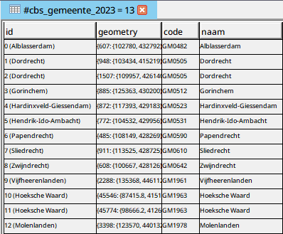
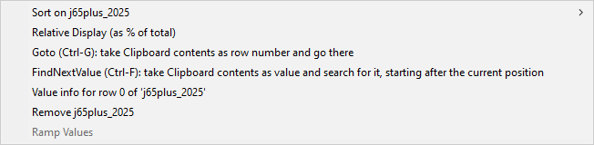

user-guide-geodms-gui - table view
Table View
All data-item can be visualized in table view. One table presents data-item or a set of data items of the same domain-unit. The table is the default view for items that cannot be visualized in a map-view, these items can be:
- Data items for which the domain unit cannot be georeferenced, in the treeview indicated by the icon:

- Containers with data items as subitems (first level subitems). The first data item of this container determines the domain unit of the Table, all data items that have this same common domain unit are added to the table. These items are indicated by the icon:


example of a table for a selection of municipalities in a region
This table presents 4 columns (attribute for the domain-unit: cbs_gemeente (selection of 13 municipality). The name and cardinality of this domain is presented in the title of the view.
For tables with attributes a first column is always automatically added, called id. This column presents the index-numbers of the domain (for parameter, such a column is not added). In this table, after the index number a name of the municipality is presented, between brackets). This can be achieved by configuring a label string attribute as subitem of the domain unit. In tables where relation to this domain are presented, these labels are also shown.
activate table view
As with the map view, a new table can be activated for a tree item, or the tree item can be added to an already opened table (if this opened view is of the same domain unit as the requested data item). The following table shows the possible actions to visualize a tree item in a Table and the results of the actions.
| action | no active table for the requested domain | active table for the requested domain | active table for other domain |
|---|---|---|---|
| Double click on active tree-item (if Table is default viewer, indicated by the or icon) | New Table window with the requested data item or all the subitems at the first level of the found domain. | Data item or subitems at the first level with the same domain unit are added to the active table. | New Table window with the requested data item or all the subitems at the first level of the found domain. |
| Main/pop-up menu option Default View (only if the Table is the default viewer, indicated by the or icon) on active tree-item | New Table window with the requested data item or all the subitems at the first level of the found domain. | Data item or subitems at the first level with the same domain unit are added to the active table. | New Table window with the requested data item or all the subitems at the first level of the found domain. |
| Main/pop-up menu option Table View on active tree-item | New Table window with the requested data item or all the subitems at the first level of the found domain. | Data item or subitems at the first level with the same domain unit are added to the active table. | New Table window with the requested data item or all the subitems at the first level of the found domain. |
| Ctrl-D on active tree-item | New Table window with the requested data item or all the subitems at the first level of the found domain. | Data item or subitems at the first level with the same domain unit are added to the active table. | New Table window with the requested data item or all the subitems at the first level of the found domain. |
| Drag and drop active tree-item to view area/active Table View | New Table window with the requested data item or all the subitems at the first level of the found domain. | Data item or subitems at the first level with the same domain unit are added to the active table. | New Table window with the requested data item or all the subitems at the first level of the found domain. |
working with tables
The width of the columns can be adapted by moving the mouse to the header row, on the border between two columns. A mouse pointer with two arrows appear. Click with the left mouse button, keep this button pressed and move the mouse to the left or the right to change the size of the columns.
The sequence of columns can be adapted with drag and drop on the column header. Click with left mouse button on a header, keep the mouse pressed and move the mouse to the requested position.
In the table, a cell or a column can get the focus. Click on a cell or a column header to set the focus. Also, a focus rectangle can be used to set the focus to multiple cells. Therefore, first set the focus to one cell and use a left mouse-click or the arrow keys to enlarge the focus rectangle (colored black). Still in a focus rectangle, there is always one focus cell (colored blue).
By double clicking on a cell, a valueinfo window appears.
menu

With a right mouse click on the label a pop-up menu for the column is activated, with the following options:
- Sort on layer on data item name: sort values ascending or descending.
- Relative Display (as % or total): present the numeric values as percentage of the total.
- GoTo (Ctrl-G): take clipboard contents as row number and go there : paste the contents of the clipboard, interpret it as row number and jump to this row in the table.
- FindNextValue (Ctrl-F): take clipboard contents as value and search for it, starting after the current position : paste the contents of the clipboard, interpret it as search value number and jump to the first cell in the table, starting from the current position.
- Value info for row x of layer: active the value info for the cell with the focus.
- Remove layer: remove the column from the table.
- Ramp Values: ramp the values of a distribution, mainly relevant in classifications. This option is only available for not derived, numeric data items with more than one entry.
tools
| tool | description |
|---|---|
 | save to file as semicolon delimited text. |
 | copy as semicolon delimited text to the clipboard. |
 | copy the visible contents as image to the clipboard. |
 | show the first selected row. |
 | select row(s) by mouse-click (use Shift to add or Ctrl to deselect). |
 | select all elements in the active layer. |
 | deselect all elements in the active layer. |
 | show only selected elements. |
 | groupby the hightlighted columns. |